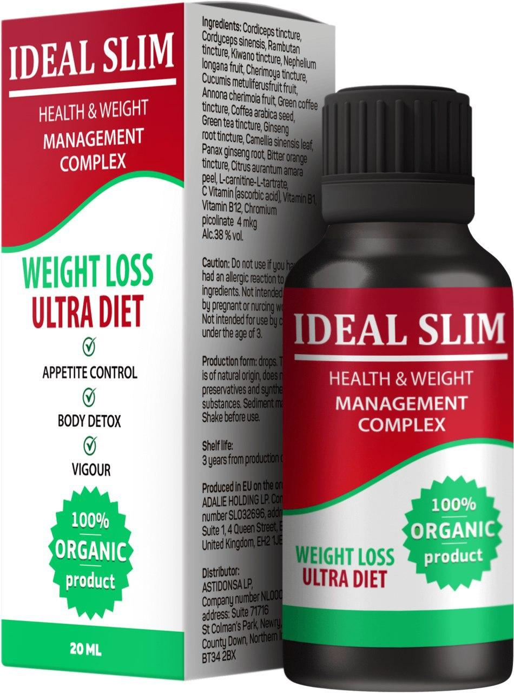

Non è mai stata magrissima, ma ai fan è sempre piaciuta anche per questo. Laura Pausini ha seguito una dieta con prodotto secreto e perso 16 kg. L'amatissima cantante ha deciso di parlarne apertamente in un’intervista e svelare la sua dieta.
La 46enne romagnola ha riacquistato una silhouette sinuosa, in seguito al periodo post partum relativo alla nascita della sua primogenita Paola. Ma come ha fatto la cantautrice a dimagrire di ben 16 kg?
Prima e dopo la perdita di peso.
Basti notare le sue recenti performance live o semplicemente guardare i suoi ultimi videoclip musicali per constatare come la cantante romagnola abbia riacquistato una silhouette proporzionata alla sua statura, sfoggiando senza indugi le sue curve ritrovate e in vestitini decisamente attillati.
Ma qual è stata la misteriosa ed efficace dieta che ha compiuto il miracolo? Stando a ciò che ha riferito la Pausini – sempre molto schietta e senza alcun problema ad ammettere candidamente di esser stata in evidente sovrappeso – i sacrifici e le rinunce alimentari che ha dovuto fare sono minimale. Occorre sottolineare che Laura Pausini ha seguito una dieta sotto la supervisione di un medico specialista. Il prodotto di cui Laura ha parlato durante il intervista è Ideal Slim
Commenti dello specialista
Un risultato straordinario: meno -16 kg!
Sito ufficiale Ideal Slim in Italia, dove è possibile acquistare il prodotto con uno sconto del 50% (solo 49 euro invece di 98)
Elena
Il 'potere' che hai su di me ed il bene che mi fai non so definirli a parole.
35 min fa
Laura
Laura è bellissima !!!!!!
1 ora fa
Federico
È bellissimo La’.. e non c’è traccia che reputo meno bella delle altre.. hai fatto un lavoro superlativo, ogni volta riesci a superarti..
2 ore fa
Annamaria
Ma che cos’è questo rimedio? Qualcuno l’ha usato?
5 ore fa
Luisa
Lo uso già da 3 settimane, sono stupita! Non ci credo nemmeno io quanto velocemente si cambia la figura! E’ una magia!
5 ore fa
Chiara
Anch’io ne ho sentito parlare delle straordinarie proprietà del rambutan che non solo aiuta a perdere peso ma anche elimina le tossine dal corpo
7 ore fa
Francesca
Anche io voglio così!!! Dove posso comprarmela questa meraviglia?
8 ore fa
Alessandra
Laura è bellissima!!!!
15 ore fa
Nicoletta
Queste gocce sono il mio prodotto preferito! Sono riuscita a perdere quasi 19 kg, è l’unico rimedio che mi ha aiutato! L’importante è che non è difficile affatto!
20 ore fa
Piero
Mmmmmmm… Che corpi!!!! Mamma mia!
21 ore fa
Lucia
Il mio allenatore mi ha parlato di questo prodotto ... Mi ha detto che trasforma il grasso bruno in quello bianco ed è per questo che dimagriamo
ieri
Paola
Ne ho 54, ho già perso 14 chili con Ideal Slim, non cercare le scuse!
ieri
Ettore
Quando sei giovane è molto facile perdere peso ma con l'età diventa più difficile
ieri
Sabrina
Non ci posso credere !!! 17 kg in 5 settimane ?? Ditemi dove si può comprare queste gocce?
ieri